Konzept/Inspiration
Für meine Bewerbung für das Hebammenstudium musste ich eine Präsentation vorbereiten. Wir durften kein digitales Format verwenden, aber wir konnten jedes andere Medium zur Unterstützung der Präsentation nutzen. Ich entschied mich dafür, ein Flipchart aus Filz zu machen und verschiedene Filzgrafiken zu verwenden, um meine Informationen zu visualisieren und zu präsentieren.
Materialien und Techniken
Filz Grafik 2023
Herausforderungen/Entdeckungen
Das Entwerfen der Grafiken und das Finden der richtigen Farben war eine Herausforderung, ebenso wie das Übertragen meiner Muster auf Filz und das Ausschneiden der kleinen Details. Das Anordnen der Teile wie bei einem Puzzle und das Aufkleben auf das Flipchart erforderten ebenfalls sorgfältige Planung, damit alles zu meiner Präsentation passte und meine Informationen veranschaulichte.


Konzept/Inspiration
Ich habe mein eigenes Häkelmuster für einen Kiwi-Vogel entworfen. Das erste Design ist in Grün, das zweite in Schwarz mit einem silbernen Farn, der die All Blacks (Neuseeländischen Rugbyteam) symbolisiert, und das dritte ist in zwei Hälften geteilt, sodass ein Kiwifrucht-Motiv zum Vorschein kommt.
Materialien und Techniken
Häkeln 2023
Herausforderungen/Entdeckungen
Ich habe mein eigenes Häkelmuster durch Ausprobieren entwickelt und dabei mit verschiedenen Designs und Variationen experimentiert. Um den Kiwi in zwei Hälften zu teilen, musste ich das Schnittmuster an das neue Design anpassen. Ich habe das Muster aufgeschrieben und es online von anderen testen lassen, um anhand ihres Feedbacks die endgültige Version zu verfeinern.
Kooperative Leistung
Ich habe das Schnittmuster entworfen und geschrieben, dann habe ich eine kleine Gruppe von Leuten gefunden, die bereit waren, mir beim Testen zu helfen. Ich habe sie bei allen Problemen angeleitet und ihr Feedback in das endgültige Muster einfließen lassen.
Teil des fertigen Schnittmusters


Kiwis meiner Testers

 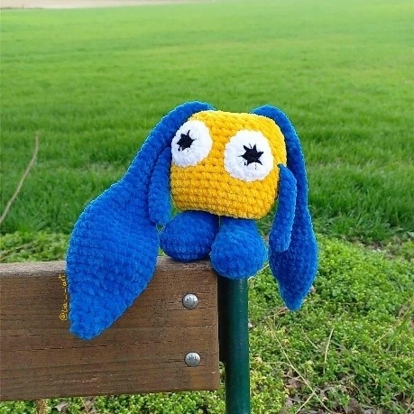
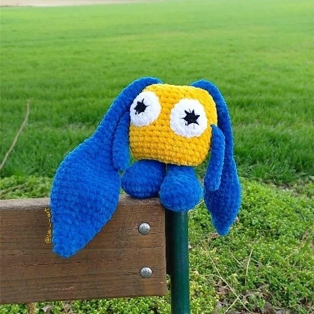
Konzept/Inspiration
Ich wollte ein Häkelmuster mit beweglichen Teilen erstellen: Wenn man an den Ohren des Hasen zieht, werden sie länger und die Füße kürzer und umgekehrt.
Materialien und Techniken
Häkeln 2023
Herausforderungen/Entdeckungen
Ich habe mein eigenes Häkelmuster durch Ausprobieren entwickelt und dabei mit verschiedenen Designs und Variationen experimentiert. Es war schwierig herauszufinden, wie man die Ohren und Beine beweglich machen kann. Ich habe das Problem gelöst, indem ich zwei Röhren im Inneren des Körpers angebracht habe, durch die die Teile gezogen werden können, um Bewegung zu erzeugen.
Kooperative Leistung
Ich habe das Schnittmuster entworfen und geschrieben, dann habe ich eine kleine Gruppe von Leuten gefunden, die bereit waren, mir beim Testen zu helfen. Ich habe sie bei allen Problemen angeleitet und ihr Feedback in das endgültige Muster einfließen lassen.

Teil des fertigen Schnittmsuters
 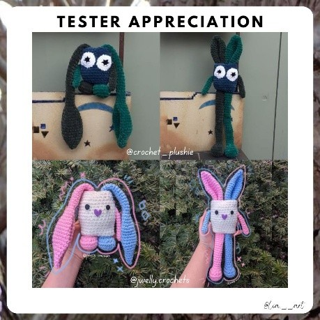
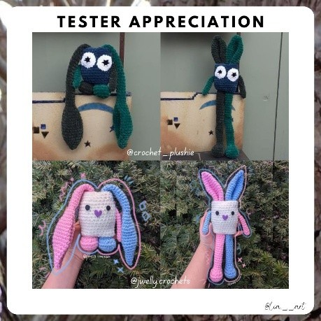
Hasen meiner Tester

Konzept/Inspiration
Ich wollte ein Häkelmuster entwerfen, das von Throg, dem Frosch des Donners aus den Marvel Comics, inspiriert ist.
Materialien und Techniken
Häkeln 2023
Herausforderungen/Entdeckungen
Ich habe mein eigenes Häkelmuster durch Ausprobieren entwickelt und dabei mit verschiedenen Designs und Details experimentiert, um es an die Comic-Version des Frosches anzupassen. Ich habe einen Schaumstoffblock als Füllung zurechtgeschnitten, um den Hammer zu einem rechteckigen Würfel zu machen, und einen mit Pfeifenreiniger umwickelten Draht verwendet, um dem Hammergriff Stabilität zu verleihen. Außerdem habe ich Schaumstoff-Lockenwickler in den Beinen und im Hals verwendet, damit er selbstständig stehen kann.
Die Nase und den Mund skizzieren

Entwurf des Umhangs

Details der Kopfbedeckung
Konzept/Inspiration
In den österreichischen Alpen gibt es eine Tradition namens „Almabtrieb“. Die Kühe verbringen den ganzen Sommer in den Bergen, werden aber für den Winter heruntergebracht, damit ihnen nicht das Futter ausgeht. Es ist eine jährliche Tradition, die Kühe mit dekorativen Kopfbedeckungen und Blumen zu schmücken, während sie aus den Bergen heruntergebracht werden. Das Ereignis wird als Stadtfest mit traditionellen Speisen und Getränken gefeiert.
Materialien und Techniken
Häkeln 2022
Herausforderungen/Entdeckungen
Ich habe mit verschiedenen Wollarten experimentiert, um die Kuh und die Kopfbedeckungen herzustellen. Um Kopfbedeckung stabil genug machen zu können, damit sie aufrecht stehen bleibt, habe ich sie schließlich um einen dunkelgrünen Pfeifenreiniger herumgehäkelt, um ihr Halt zu geben.
 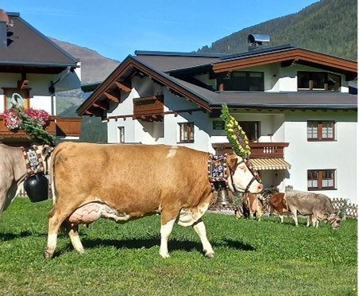
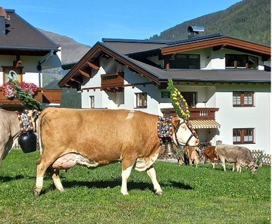

 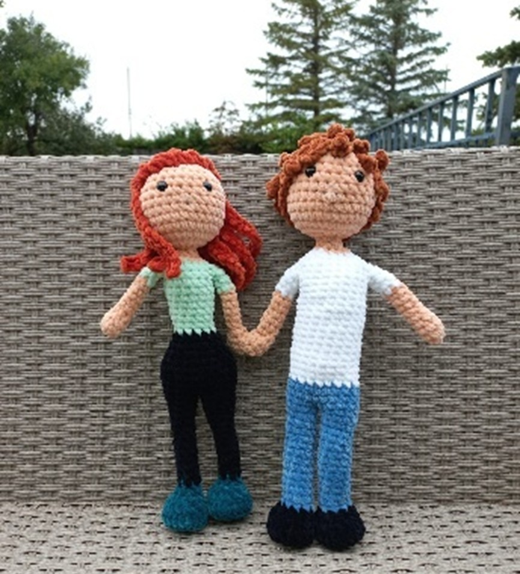
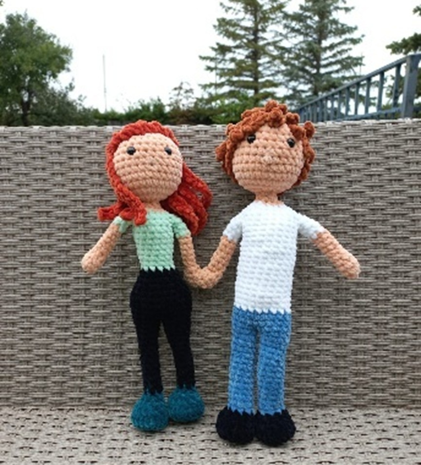
Konzept/Inspiration
Ein Hochzeitsgeschenk für meinen Cousin und seine Frau
Materialien und Techniken
Häkeln 2023
Herausforderungen/Entdeckungen
Ich habe mein eigenes Schnittmuster entwickelt, damit die Figuren wie echte Menschen aussehen. Aus früheren Projekten habe ich gelernt, dass man den Figuren mit Schaumstoff-Lockenwicklern in den Beinen und im Hals Stabilität verleiht, sodass sie aufrecht stehen können und ihre Hälse nicht schlaff herunterhängen. Ich habe Magnete in die Münder und Hände eingebaut, damit sich die Figuren küssen und an den Händen halten können. Ursprünglich hatte ich Druckknöpfe oder Klettverschlüsse in Betracht gezogen, aber diese waren optisch zu auffällig, sodass Magnete die bessere, verstecktere Lösung waren.
 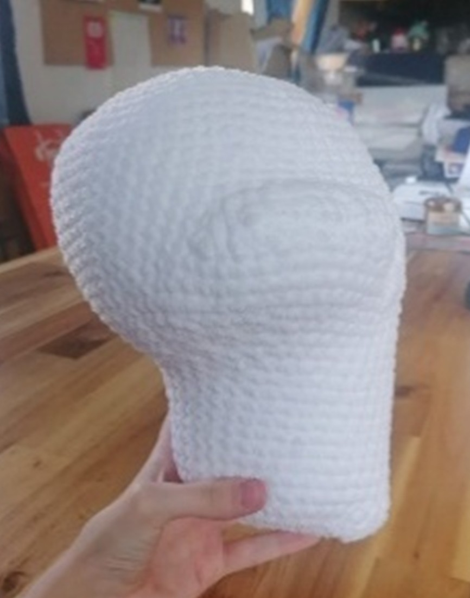
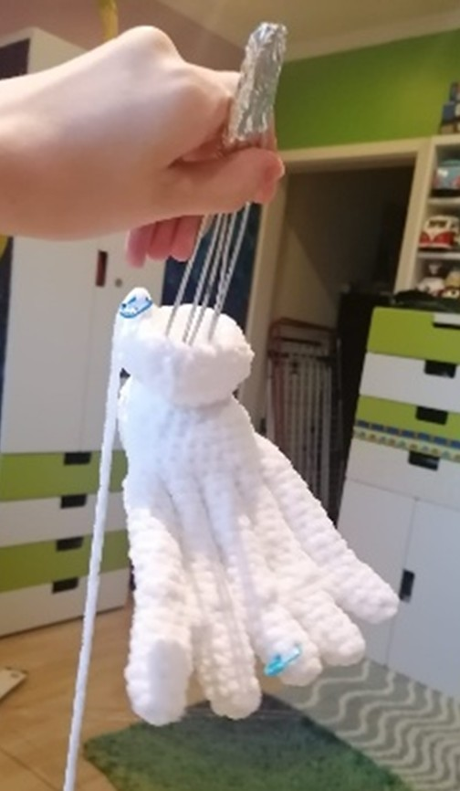
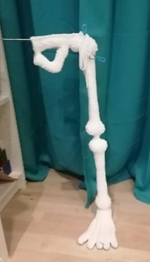
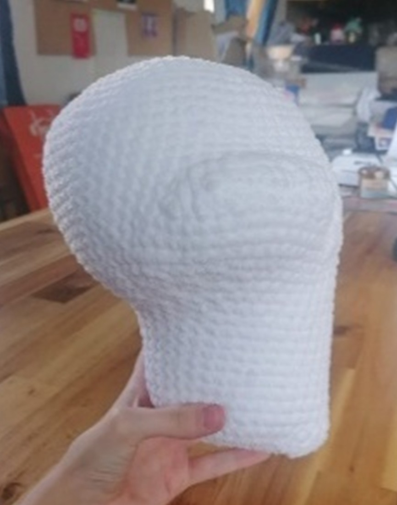
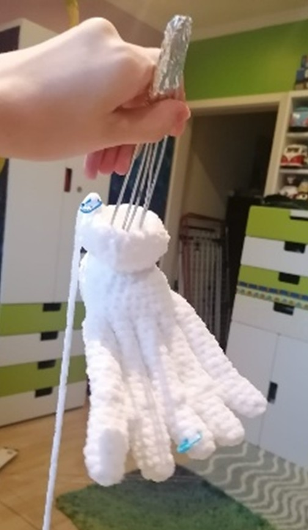
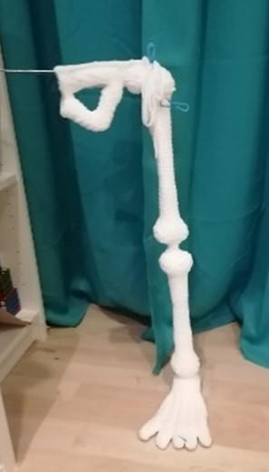
Konzept/Inspiration
HHalloween-Häkelskelett
Materialien und Techniken
Häkeln 2025 – in Arbeit
Herausforderungen/Entdeckungen
Ich habe nach einer Häkelanleitung gearbeitet und viel dickere Wolle verwendet als vom Hersteller vorgesehen, wodurch mein Skelett nun lebensgroß ist. Es war schwierig, die richtige Menge an Draht für das Innengerüst zu finden. Das Häkeln um den steifen Draht herum, damit die Figur stehen und ihr Gewicht tragen kann, ist eine Herausforderung, und das Zusammenfügen aller Teile erforderte sorgfältiges Nähen an schwer zugänglichen Stellen.
Email: lia@little-english.at